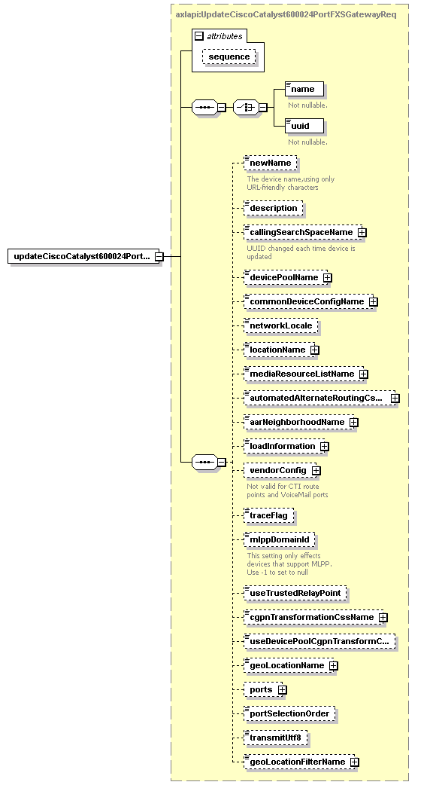

| diagram |  | ||||||||||||
| namespace | http://www.cisco.com/AXL/API/10.5 | ||||||||||||
| type | axlapi:UpdateCiscoCatalyst600024PortFXSGatewayReq | ||||||||||||
| properties |
|
||||||||||||
| children | name uuid newName description callingSearchSpaceName devicePoolName commonDeviceConfigName networkLocale locationName mediaResourceListName automatedAlternateRoutingCssName aarNeighborhoodName loadInformation vendorConfig traceFlag mlppDomainId useTrustedRelayPoint cgpnTransformationCssName useDevicePoolCgpnTransformCss geoLocationName ports portSelectionOrder transmitUtf8 geoLocationFilterName | ||||||||||||
| attributes |
|
||||||||||||
| source | <xsd:element name="updateCiscoCatalyst600024PortFXSGateway" type="axlapi:UpdateCiscoCatalyst600024PortFXSGatewayReq"/> |